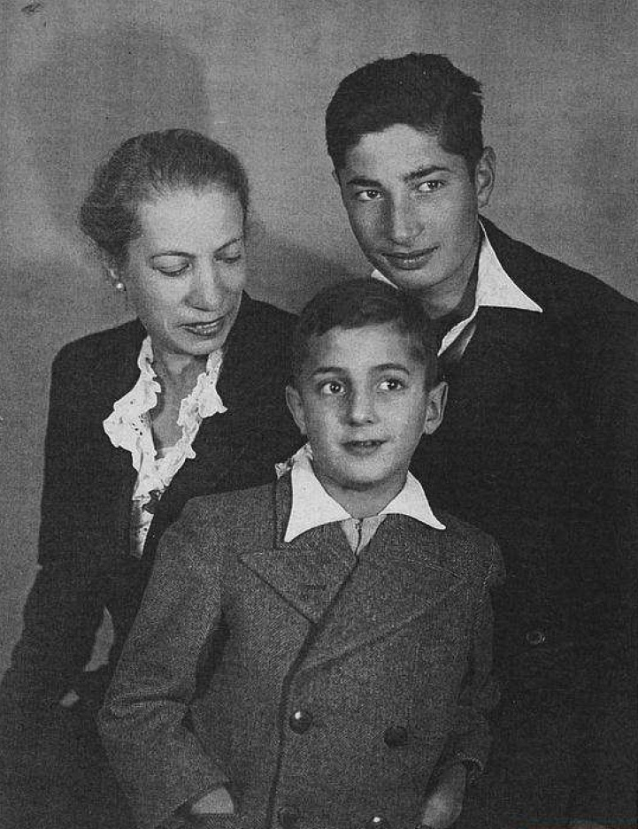

Portrait d’archive
Marcel Lewinsohn
Marcel LEWINSOHN
Marcel LEWINSOHN est né le 26/08/1933 à Lyon en France.
Rassemblé à Grenoble, il est déporté à Auschwitz le 07/03/1944 par le convoi n°69. Il est mort en déportation.
Déporté avec sa mère Françoise née le 02/06/1894 à Leipzig.
Dernière adresse connue : 3 Place de l'Eglise (Domène)
Nom : LEWINSOHN
Prénom(s) : Marcel
Date naissance : 26/08/1933
Âge (ans) : 10
Lieu naissance : Lyon 02
Pays ou département : Rhône
Lieu rassemblement : Grenoble
Dernière adresse : 3, place de l’Église
Ville : Domène (et non Donièvre)
Code postal : 38420
N° Convoi : 69
Date déportation : 07/03/1944
Informations diverses : Marcel est le fils de Nathan Lewinsohn et de Françoise Frantziska née Blumlein (02/06/1894 à Leipzig, Allemagne). Suite à l’arrestation de son mari, Frantziska se réfugie à Lyon où nait son fils Marcel le 26/08/1933. Elle travaille en tant qu’assistante sociale avec l’abbé Glasberg pour aider les réfugiés juifs à fuir le régime nazi et dirige le service social du Comité d'assistance aux réfugiés de Lyon. Par sécurité, elle place Marcel à Domène aux environs de Grenoble. Le 13 février 1944, elle rend visite à Marcel à Domène avec son second fils Eliezer Oskar, dit Bobby (né le 07/01/1927). Ils sont arrêtés par la Milice et la Gestapo. Bobby parvient à s’enfuir. Marcel et sa mère sont transférés à Drancy le 16/02/1944. Un graffiti a été retrouvé à Drancy portant le nom de Marcel et de sa mère, accompagné d’une étoile de David : “Françoise Lewinsohn _ Marcel Lewinsohn _ à Lyon et après Grenoble _ arrivés le : 16-2-1944 _ déportés le : 7-3-1944 _ COURAGE _ ESPOIR” (Source: Les graffitis du camp de Drancy). Ils sont déportés à Auschwitz par le convoi n°69 du 07/03/1944.
Au journal officiel, est déclaré mort à Auschwitz un garçon, Jean Lewinsohn (né le 24/09/1934, Lyon). Il s’agit sans doute de Marcel : Lewinsohn (Jean), né le 24 septembre 1934 à Lyon 2e (Rhône), décédé le 12 mars 1944 à Auschwitz (Pologne). JO
Son frère, Bobby, survivra à la guerre et immigrera en Israël et prendra le nom de Eliezer Ben Zion. En 1990, il déposera des fiches de témoignage à l’Institut Yad Vashem pour son frère et sa mère.
Lieu de départ : Drancy
Nombre total de déporté·e·s du convoi : 1501
Gazé·e·s à l'arrivée : 1311 (87,3 %)
Survivant·e·s en 1945 : 34 (2,3 %)